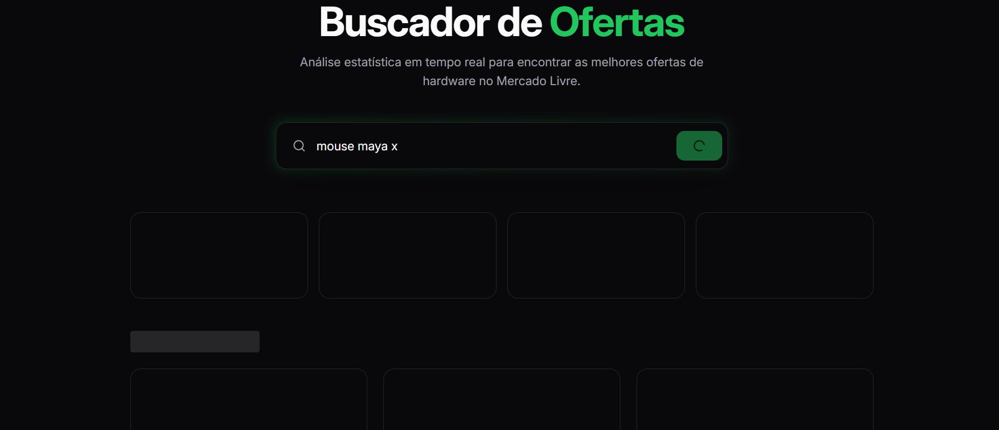
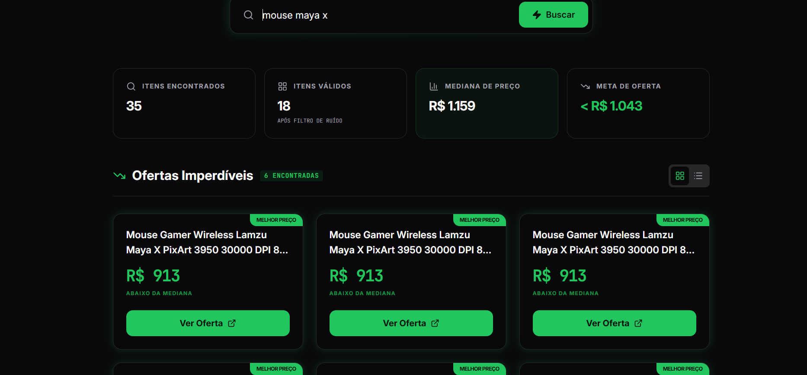
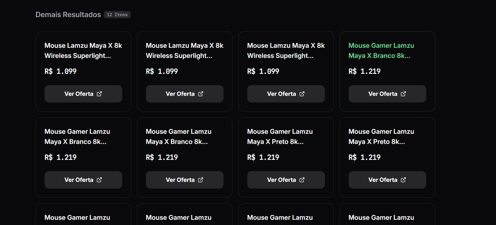

Buscador de Ofertas: Monitoramento e Análise Estatística
A Abordagem
Mais do que um buscador, o sistema atua como uma pipeline de dados: extração via Playwright, processamento em Pandas e entrega em React 19.
Inteligência de Dados
Aplicação de filtros de outliers e cálculo de mediana limpa para identificar oportunidades reais com threshold de 10% abaixo do mercado.
Stack Moderna
Backend em FastAPI orquestrando a lógica de dados, com frontend reativo utilizando Tailwind 4 e animações Framer Motion.
Engenharia de Decisão
Como analista, entendo que dados brutos são ruído. Este projeto foca na limpeza de outliers: anúncios com preços 30% abaixo ou 300% acima da mediana são descartados automaticamente para evitar "anúncios isca" ou acessórios.
O resultado é uma mediana refinada que representa o valor real do item, permitindo que o algoritmo destaque apenas o que é estatisticamente uma oferta imperdível.
Destaques Técnicos



